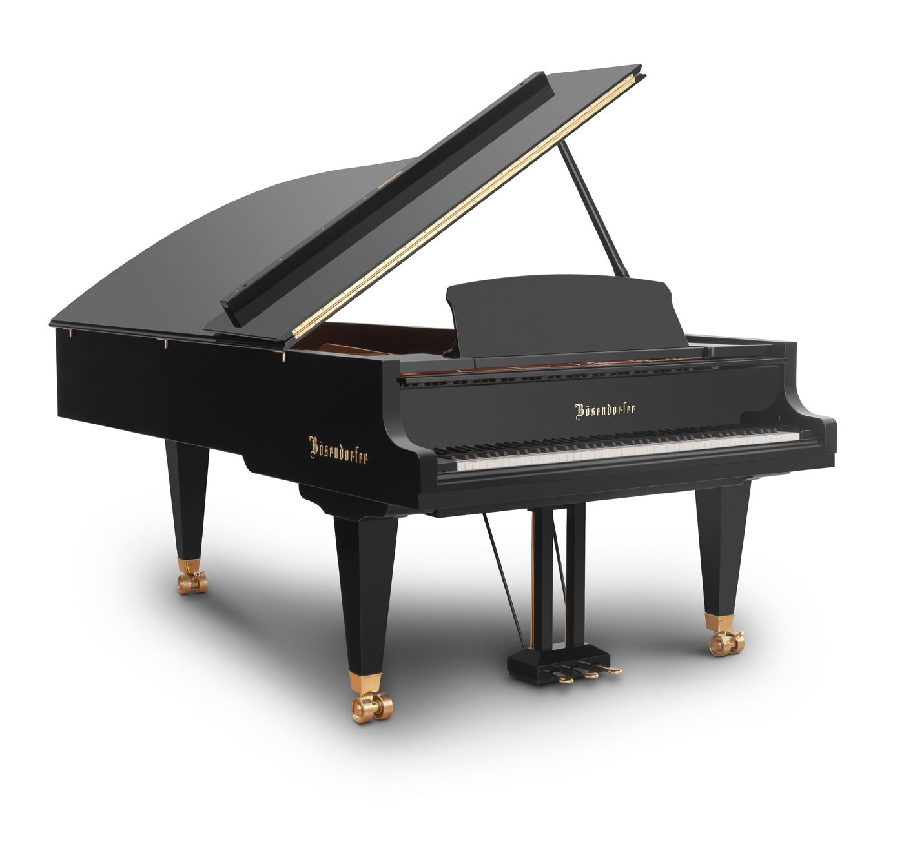

KlavierXML
Learn piano the way you want.
Any song you like. You build your own score library. BYOS = Bring your own Song

What is an XML file?
Sheet music stored as text
- XML, short for eXtensible Markup Language, is a text format for storing and sharing structured information.
- MusicXML is a common file format for sharing digital sheet music between notation programs.
- A MusicXML file is sheet music written down as text.
- An MXL file is that same score, compressed so it is smaller to download.
How to get songs
Bring any piece into the app
Klavier opens MusicXML (.xml / .musicxml)
and compressed MusicXML (.mxl). Save the file on your
iPad, then open it from the app.
Go to https://www.musicxml.com/music-in-musicxml/ and learn more where to get or buy XML scores.
The app
Watch the app
See Drill Mode and Pro Mode in action. The clips start on their own.
- Select a focus range by measures or chords — circle it with the lasso, or use the lowest key to start and the two highest keys to set the end of the range.
- Practice each hand separately (left, right, or both).
- Listen to the song (or just your selected range) first, then practice it yourself.
- Record your plays and play them back later — saved on your device.
- All practice time is collected and saved locally on your device. Nobody else collects that data.
- After you play a range, you get feedback — for example, a clap for a clean run with no mistakes.
- Falling bars can be turned off when you prefer a clearer view.
- Print your sheet music from the score.
- Upload and download scores from the KlavierXML exchange server.
- Switch between portrait and landscape view.
- Play every song with 4 different piano sounds.
- The page turns automatically when you play the last chord on the screen.
- Zoom in and zoom out to read the score at your preferred size.
- Print your sheet music from the score.
- Upload and download scores from the KlavierXML exchange server.
- Switch between portrait and landscape view.
- Play every song with 4 different piano sounds.
Why this piano app
Practice the song you actually want
- Practice any song. There is no catalog limit.
- Other apps only offer their own songs. A piece can disappear, or the one you want is never available.
What it does
A library that stays with you
- It helps you learn piano faster.
- You build your own song library on your device, so practice does not need an internet connection.
- Download a MusicXML file once, then play it any time.
Privacy
No data collected
KlavierXML does not collect personal data. There is no account, no analytics, and no tracking. Scores you play, practice time, and recordings stay on your device — nobody else collects them.
After this page has loaded, the player works offline. No internet connection is required to hear a score you already have.
Please respect copyright. Use public-domain music, files you bought, or files the creator has allowed you to use.
Rüdiger Lueg · rudilueg@gmail.com
Acknowledgements
Built with open music
This app would not be possible without the help from those organizations and the people who make it work.
Klavier stands on the work of OpenSheetMusicDisplay, VexFlow, FreePats, FluidR3, MuseScore engravers, and many others who share notation tools, piano sounds, and scores.